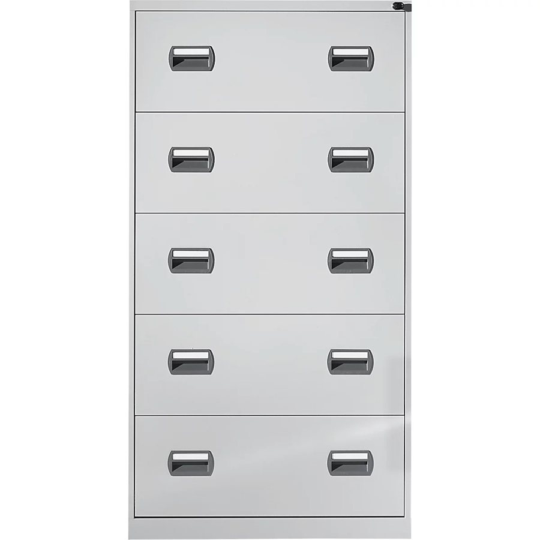
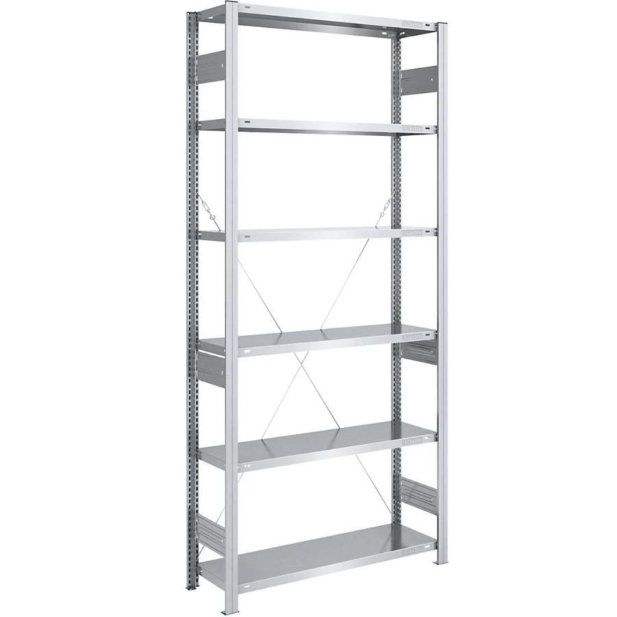
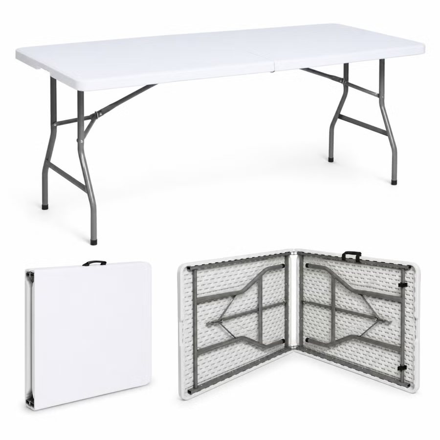
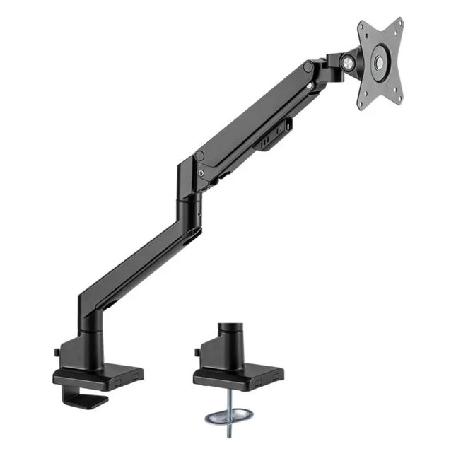
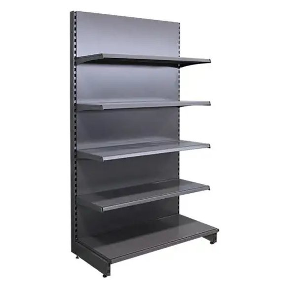
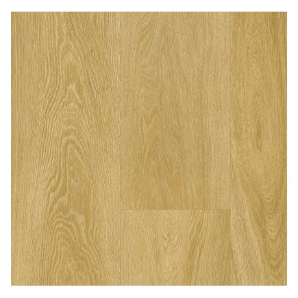
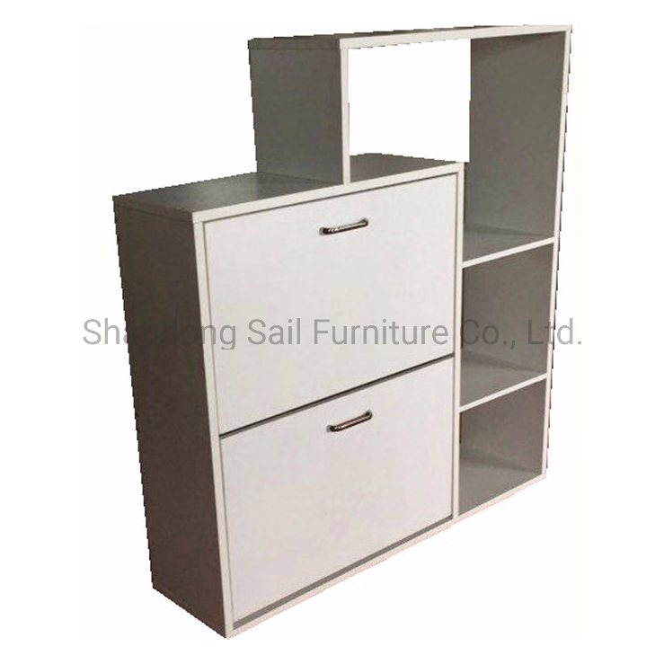
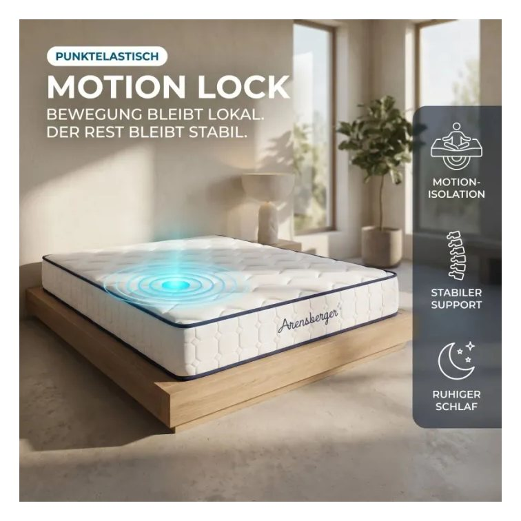
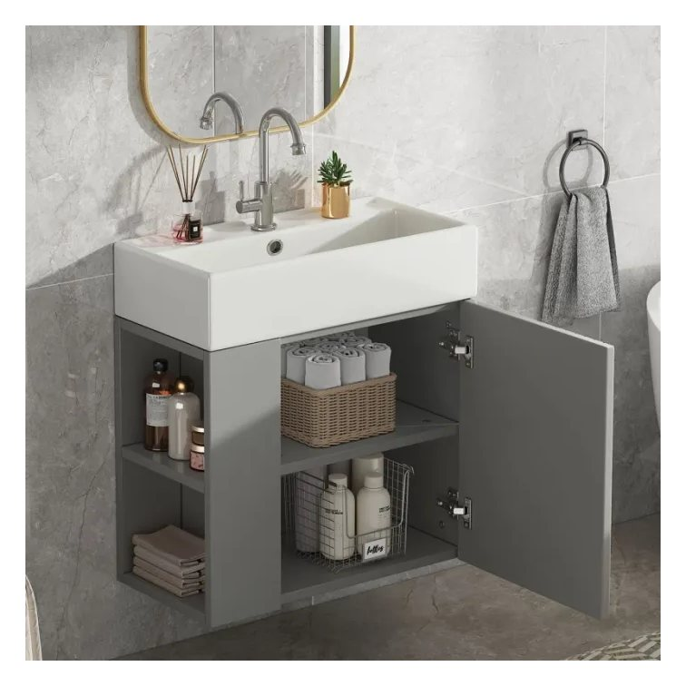

首页 / 家具
家具
26 个产品

电动升降办公桌 160×80 cm双电机电动升降办公桌，带记忆高度按键，适用于办公室和工地集装箱办公室。

人体工学网布办公转椅 （可调高度）高背网布办公转椅，配头枕、腰托、倾仰机构和气弹簧，适合长时间办公。

带抽屉的钢制文件柜 （可上锁）可上锁的四抽屉钢制文件柜，带防倾翻保护，用于办公室和工地集装箱内存放工程档案和图纸。

钢制更衣柜 （可上锁）带通风门的可上锁钢制更衣柜，用于在更衣和休息集装箱内分开存放工作服与私人衣物。

重型钢制组装货架 （免螺栓）免工具安装的钢制插接式货架，单层承重高，适用于仓库、车间和工地集装箱。

HDPE 塑料折叠桌 180 cm防风雨的手提箱式折叠桌，吹塑 HDPE 桌面配钢管桌架，适用于工地集装箱内的休息室和会议。

工地集装箱营地桌凳套装：220 cm 折叠桌 + 2 条长凳 （3 件套）由 220 cm 折叠桌和两条长凳组成的三件套，木面钢架，用于工地集装箱的休息区和会议区。

气弹簧显示器支架，桌夹式 （17–32 英寸, 承重至 9 公斤, VESA 75/100）纤薄铝制气弹簧显示器支架，适用于 17 至 32 英寸屏幕，可用桌夹或穿孔方式安装。

办公椅硬地板脚轮，5 件套 （直径 50–60 毫米, 杆径 11 毫米, 可选带刹车或静音）静音双轮脚轮，软质 PU 胎面，11 毫米插入式杆，保护实木地板、复合地板和瓷砖。

插接式货架加装/备用层板，镀锌钢 （150 和 330 公斤, 含层板托架）带层板托架的镀锌钢层板，用于插接式货架的加层或更换；仅在间距完全匹配时才有意义。

升降书桌用防疲劳地垫 （PU/PVC 泡沫, 防滑, 约 100 x 50 至 150 x 90 厘米）用于长时间站立办公的弹性泡沫地垫，防滑、可擦拭，有多种尺寸和厚度。

钢制货架/中岛货架用于门店和超市的模块化钢制货架,可作靠墙或中岛使用,层板可调。

SPC 锁扣乙烯地板 (刚性芯材,4 mm,耐磨层 0.3 mm)防水锁扣乙烯地板,矿物 SPC 芯材,木纹外观,悬浮铺设,适用于住宅和商业空间。

WPC 外墙挂板 (木塑复合,173 × 21 mm 型材)免维护的木塑复合外墙护板,以型材板形式用于通风幕墙式外墙。

办公用 LED 面板灯 62 × 62 cm (UGR < 19,背光式,40 W)尺寸 595 × 595 mm 的低眩光格栅灯,适用于办公室格栅吊顶,背光式 LED,铝框。

办公室活动柜 （钢制, 3 抽屉, 可上锁）可上锁的三抽屉钢制活动柜，放在办公桌下存放文件和办公用品。

8–10 人会议桌 （320 × 150 cm）

移动式白板 180 × 90 cm，双面，磁性带铝框、笔架和脚轮的双面磁性移动白板 180 × 90 cm，适用于会议和工作坊。

咖啡桌 （木/金属, 约80–100厘米）客厅咖啡桌，人造板台面，金属或木质框架。

带搁板的鞋柜 （人造板）玄关用人造板鞋柜，带分层。

袋装弹簧床垫90 x 200厘米 （七区）分区袋装弹簧床垫，带泡棉舒适层，部分款可卷包装盒运输。

庭院餐桌椅套装，铝/绳编 （桌+4椅）铝框架绳编/藤编风格庭院餐桌椅，耐候。

餐饮/宴会铝制堆叠椅适用于餐厅、酒店和活动的铝制堆叠椅。

带陶瓷盆的浴室柜带洗手盆的浴室柜，防潮材料。

木制婴儿床 （70 x 140厘米）木制婴儿床，可调高度床板与护栏。

金属单人床架90 x 200厘米 （带床板）钢制单人床架，带床板，粉末涂层。